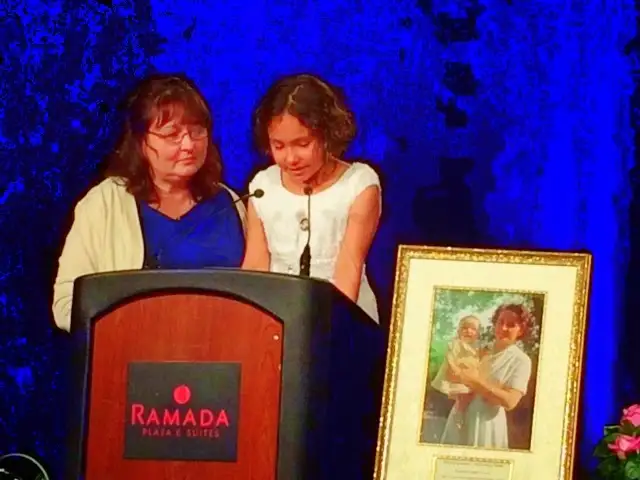
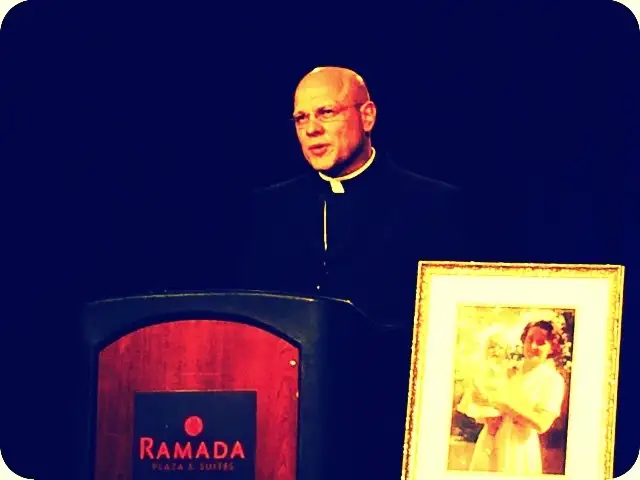

I’ve known of the St. Gianna’s Maternity Home in Warsaw, N.D., since before its grand opening a decade ago. In that first year, I had the privilege of touring its beautiful interior just on the cusp of its becoming a harbor for women facing unplanned pregnancy and dire situations meriting refuge.
And I’ve become endeared to the woman who inspired the name and mission — St. Gianna Beretta Molla. Several years after the home opened, my middle son, Adam, had a chance to meet Gianna’s son, Pierluigi Molla, who was in town for a special event associated with the home.
From afar, I’ve watched the home become a success story, not only for the babies who’ve been brought into the world because of it but for the mothers, whose lives have been rebuilt from the bottom up due to the care they’ve received there.
And on Monday, I was blessed to be part of a 10th anniversary celebration to honor the home and those associated with it.
{kind=link}
My part was small. I sang one song at the end of the evening as things wrapped up and guests considered stewardship opportunities to keep the home running. But my reward was huge.
The home’s founder, Mary Pat Jahner, insisted my guest and I join the head table at the front and center of the long room. This head table included the keynote speaker and our state’s lieutenant governor, but it was as casual and humble a table as you could find.
One of our table guests came with crayons and a stuffed teddy bear. She’s only nine — the same age as my baby — but when she gave her speech, all eyes and hearts were happily captive.
This little gal is not only full of spunk but she lays claim to having been the first baby to be born with the help of St. Gianna’s. She bears the same name, in fact, without the “saint” at the beginning — at least for now.

The keynote speaker is someone who has become personally very special to me, having spent time with my father in his final months in the hospital, starting in November 2012, until his death in January 2013. At that time, Monsignor presided over the funeral and, during a quiet conversation as we prepared to do the Mass music, he gave my sister and me a gift — a gentle glimpse into the soul of our father in his final days. I will be forever indebted.

He normally speaks from the pulpit at my mother’s parish — Cathedral of the Holy Spirit in Bismarck — but for this, he made the drive three hours west. I told him I was looking forward to his talk. He warned me he’d had little time to prepare and I shouldn’t expect too much. But at the end of it, as I wiped away tears, I thought, “If this is his ad lib stuff, I wonder what his prepared talks are like?”
Monsignor is one of 14 children raised here in North Dakota. His parents showed up to hear their son talk, and when they stood, his father did a quick farmer’s wave around the room, a toothpick in his mouth, and his mother beamed as any good mother would. They seemed to be truly salt of the earth people who have turned out a son with a remarkable grasp of the soul and what it thirsts for.
And my soul needed what he shared Monday night; first, a story of his brother, Andy, someone with Down’s Syndrome who is also a hero in the minds of many — much more than he will ever be, Monsignor said. “I’d like to think God sees it that way, too, and I’d be just fine with that.”
He introduced his brother in part to lead into the crux of our top earthly goal as followers of Christ. Though I’d come to sing not report, by the end of his talk I’d managed to scribble down a few notes. Thankfully, because I’ve been pondering them ever since.
Compassion was the real theme of the evening, and Monsignor described it as one of the greatest gifts God offers us. Because of this, it is also easily distorted.
He broke the word down to its essence in order that we might enter more fully into its depth. “Compassion,” he said, comes from the Latin words “cum,” or “with,” and “pati,” or “to suffer.” So it literally mean “to suffer with.”
Mary Pat left a beloved teaching job more than a decade ago to suffer with the girls and women who would enter St. Gianna’s Maternity Home. In that time, over 80 babies have come into the world who might not be here otherwise. And over 80 mothers have been transformed.
It is not easy work. Most arrive with a fair amount of baggage, as those clients and former clients who spoke will attest to. They are, like most of us, wounded in some way and in need of healing, not just emotionally but other ways as well. St. Gianna’s gives them nourishment, from physical to spiritual, and when they move on from there, the relationship remains.
St. Gianna’s cannot save everyone, but it is a start.
So Monsignor talked of the compassion the people there have in the truest sense of the word. “It takes a great soul to understand there are no easy fixes,” he said. It is the harder thing “to suffer with,” he added, and easier to have false compassion. This is the compassion of the culture of death, which says, “I see your pain, but I really don’t want to be at the cross with you.”
“When someone has to suffer alone it’s harder to make the right decision,” he said, making it clear he understands that women in difficult situations, facing bringing a life into the world when they do not have proper support, are truly facing a hardship. “But we can do better,” he said, referring back to another story he told. He noted how much easier suffering becomes, how much more bearable, when someone is willing to suffer with us.
Not take away the problem. Not erase it. Not bring fresh wounds to those still not healed. But offer true compassion by “suffering with.”
It’s beautiful, is it not? I can’t imagine anyone there not being moved — moved to rethink this idea of compassion and what it really is.
Are we willing to enter into the suffering of others? This is what living is, according to Monsignor. There’s something powerful here, something deep, something worth taking into our hearts and pondering.
We may grapple in this world with the sincerity of our compassion, but one thing is for sure — God never will. When He offers compassion toward His children, there’s nothing false about it. He’s for real.
Q4U: What do false and true compassion look like to you?